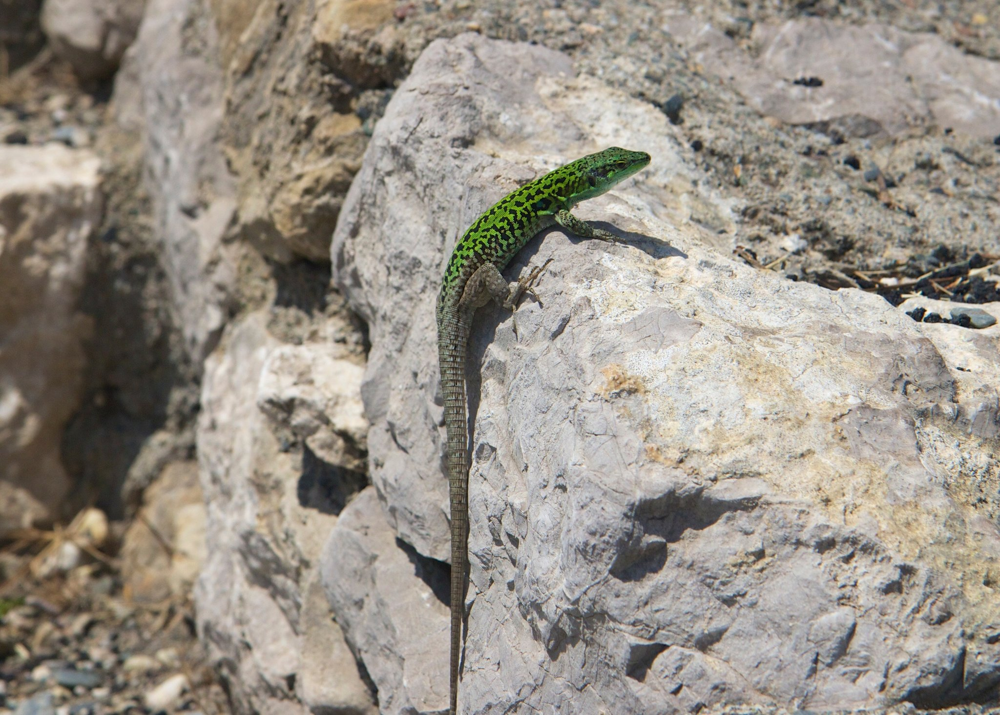
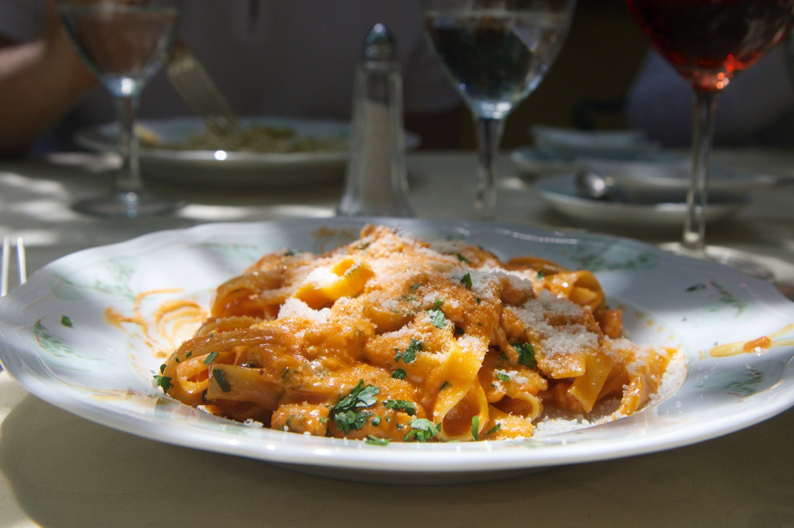

Mark Elster
Historic Reflections 7-2
The itinerary, day 7, part 2

After touring the extent of the Teatro we came away a little disappointed in the museum component—there wasn't much interpretive information offered for the €8 entry price (especially considering the venue has a source of concert revenue and minimal archeological activity) although we suspect with our short time frame we may have missed something. Easy to do, considering that the totality of the site is nearly as big as the whole town.
Turning our attention back to the Corso Umberto we have time to shop for a picture frame (we bring one back from every trip). On the way in we scoped out potential sources (there weren't many). Turns out Europeans are unaware of American demand for this simple memento, but finally we succeed. Along the way we stop for cannoli , and enjoy the street life and the site of Christoff languidly nodding off at a café.
Turning our attention back to the Corso Umberto we have time to shop for a picture frame (we bring one back from every trip). On the way in we scoped out potential sources (there weren't many). Turns out Europeans are unaware of American demand for this simple memento, but finally we succeed. Along the way we stop for cannoli , and enjoy the street life and the site of Christoff languidly nodding off at a café.
Taormina

As we descended from Castellomo, our driver Nunzio outlined an approach to our walking tour of Taormina allowing for spontaneous improvisation and timing so we could maximize the use of our limited time. He also gave us a strong recommendation to a restaurant owned by a friend, Maffei's, and a mental map of its location, pointing out that we could scope it out along our way down the Corso Umberto, making a reservation for later in our day (and undoubtedly supplementing his day with a commission that was well earned). Dropping us at 10:00am (without any payment) Nunzio agrees to rendezvous with us at 3:30pm and then we set out to implement his recommendations.
The Corso is closed to cars, for good reason: it is literally packed with people. Checking out the location of Maffei's proves more difficult than expected (we have no map) but results in mini discoveries down little side streets we might otherwise have missed.
Finally finding it down the steps of South Domenico De Guzman, angled south off of the Corso, we are immediately vindicated for the effort—Maffei's is truly charming. The owner greeted us like old friends, promised he would make something special and memorable for us, marked down our reservation for later in the afternoon and sent us on our way.
Finally finding it down the steps of South Domenico De Guzman, angled south off of the Corso, we are immediately vindicated for the effort—Maffei's is truly charming. The owner greeted us like old friends, promised he would make something special and memorable for us, marked down our reservation for later in the afternoon and sent us on our way.


Conscious that we'd gone over our time budget already, we decided to proceed east on the Corso, making note of places we would revisit on the return trip west to allow time for all the sites on our list. We couldn't help but duck in here and there, but still managed to get back on our itinerary schedule, hustling into the Greek amphitheater archeological site with time to explore it and then the Corso at a more leisurely pace.


The churches of Taormina were the least impressive we've seen, but the town is charming, and we find the brief encounters we have with the townspeople equally so. NancyEllen notices that tattoos are rare, and smoking ubiquitous (including pregnant women). The main square would be a marvelous place to people watch for hours, but our lunch reservation beckons and we're eager to eat.
The ancient theater is used for concerts and other events apparently—while we were there a plywood stage platform and stadium seating were being erected. We imagine that it must be sublime to enjoy a modern event in this nearly three thousand year–old monument and setting of unsurpassed beauty.


Maffei's setting is fortunately matched by its service and cuisine—our late lunch is delicious and we have the place to ourselves.




Taormina's charms could've held our rapt attention for at least another day (as we've found at each of the other destinations) but our home at sea is departing port early, so we tear ourselves away at the last minute, whisked back to the quay by Nunzio in time to catch one of the last tenders on very choppy seas.
Tonight we sail east across the Mediterranean and Aegean for a day at sea on our way to Turkey. But first we cap off the day with a cocktails with Gail and Ruth (from Ohio) and dinner with our friends Bobbi and Fred (the ship's magician entertainers). We closed our long day with a surprisingly entertaining variety show featuring our cruise director, Nolan Dean who turns out to be a first rate comedian and singer.
Tonight we sail east across the Mediterranean and Aegean for a day at sea on our way to Turkey. But first we cap off the day with a cocktails with Gail and Ruth (from Ohio) and dinner with our friends Bobbi and Fred (the ship's magician entertainers). We closed our long day with a surprisingly entertaining variety show featuring our cruise director, Nolan Dean who turns out to be a first rate comedian and singer.



The Teatro Greco is a relatively well preserved ruin dating originally to the seventh century BC. What we see today is actually a theater rebuilt by the Romans atop the earlier Greek ruins. The Greeks tended to use only massive marble stones (which may be why plundering of their ruins was so common) whereas we can see here that the Romans used cheap rubble for the core, encased by inexpensive easy to manufacture brick (which at one time was clad in thin decorative stone veneer). Subsequent plunderers took the thin veneer but left the brick alone—fortunately for posterity and us. Only later will we learn how this impressive site foreshadows the larger and older ruin at Ephesus.